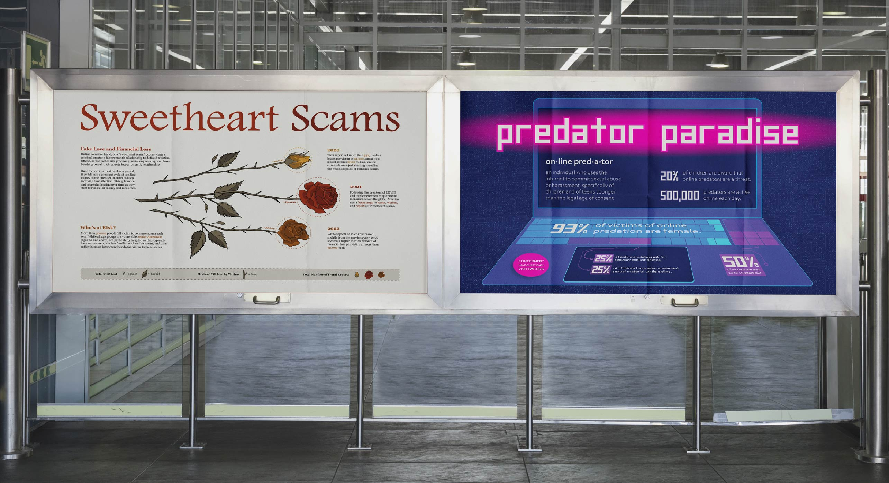
In this day and age, the consequences of online interaction with strangers can oftentimes lead down
dangerous paths. The rise of internet usage by all age groups has had unprecedented ramifications and paved
new ways for criminals to exploit unsuspecting victims.
This set of posters aims to target children and
seniors, the most
vulnerable groups in our society, and inform them of what can happen when they are taken advantage of via
the internet.
“Given the topic of “cyber fraud,” choose two primary audiences affected by it. Design a set of posters towards each and use two separate types of infographics. Research various aspects of the topic, and ensure that the final outcome utilizes arresting or memorable image that summarizes complex concepts through an aesthetic that the intended audiences will respond to.”
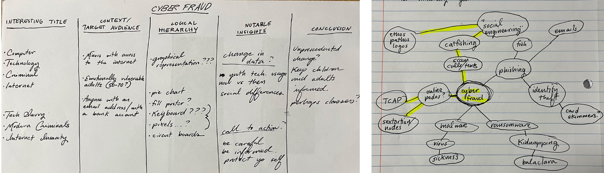
Cyber fraud occurs when a person uses technology to commit a crime. This usually involves illegal acquisition of a persons sensitive information, for monetary gain, sexual gain, or otherwise. Despite this definition being quite broad, in general, people think of crimes like identity theft and credit card scams when they hear “cyber fraud.” I wanted to take the meaning and possible interpretations in a different direction; as seen in my mind map, I highlighted more of the social engineering and online predation routes. I also did an exercise in order to help me organize my concepts before moving onto researching my target audiences.
The first audience being targeted is minors living in America - specifically, children between the ages of 12 and 15. In order to reflect the interests of this group, I chose a color palette that felt young, with neon, bright, eye-catching colors. From there, I made a few preliminary sketches of how online predation affects minors, and then did a thumbnail sketch of my favorite composition and title. I also wrote down the most important statistics that I was able to find, and did a rough mockup of how they would look if represented on a keyboard. I knew I wanted to keep the spacebar and num-pad as separate statistics, and the rest of the keys all grouped as one.
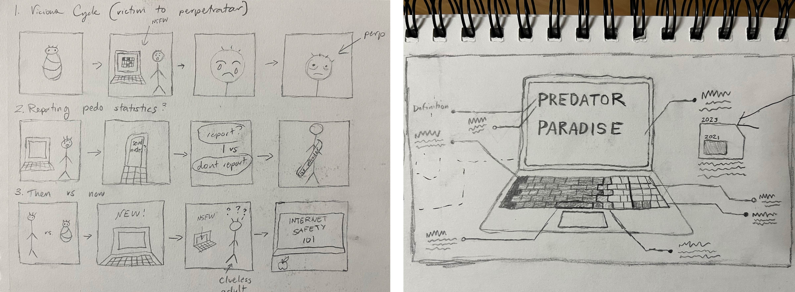
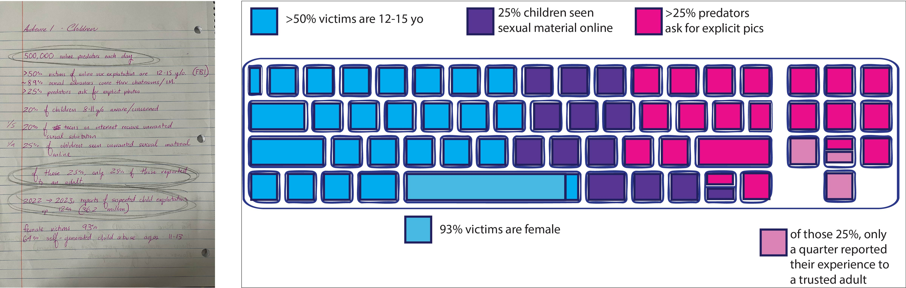
I presented a few rounds of drafts to my professor and peers for feedback. In the first draft, the feedback that I got was that the design was boring. It needed more visual and typographic interest in order to call attention to the statistics presented. Additionally, the organization of information was not clear. I needed to add hierarchy and bring more to the design overall. After incorporating the feedback from the first round, I was told to cut extraneous information and figure out a way to put the statistics on the keyboard itself. These changes would lead to a solution that was clear and simple enough for the target audience to understand, while still offering the visual interest needed to capture and keep their attention.
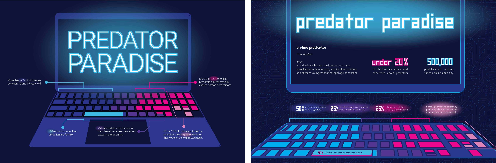
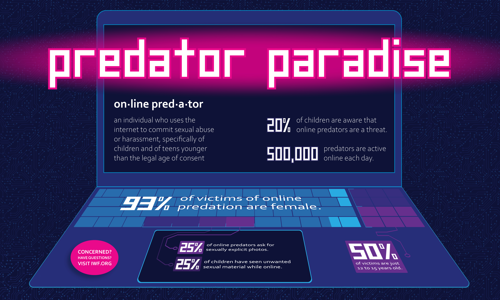
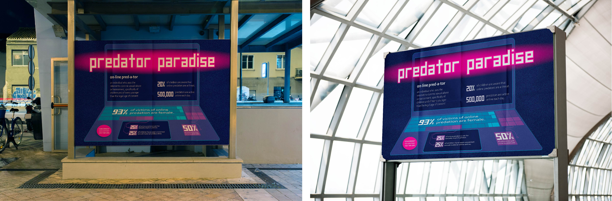
The second target audience for this topic is senior citizens, or those above the age of 65. This is because they tend to have access to money (such as nest eggs, 401Ks, and retirement funds) that the rest of the population do not. Furthermore, they also have begun to decline in cognition, making them an easier target for those looking defraud them. I did extensive research on the data that is available about romance scams targeting the elderly, pulled the most important statistics, and did my best to organize my thoughts on paper. I also started to put together the first stages of a key to decipher the graph I was going to make.
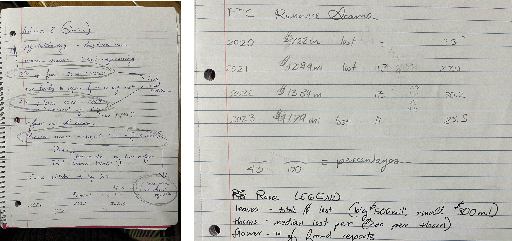
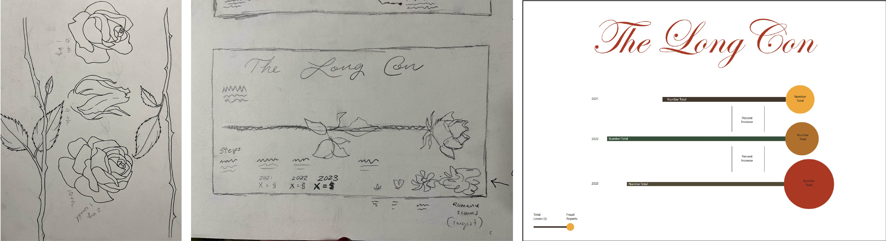
Below is the second of two rounds of drafts I presented for feedback. The paragraphs on the right side of the page are meant to reiterate the information in the illustrative graph. Despite this, the visuals (specifically the thorns) presented in the graph were not clear enough for viewers to decipher and needed to be redrawn. I also needed to fix the spacing between the headers and body copy and change the typefaces for greater visual cohesiveness overall. After I redrew the stems and leaves of the roses, the last little bit of feedback suggested that I add more color overall. I added a layer to make the key stand out, made the stems two-toned, and highlighted the important statistics in each paragraph.
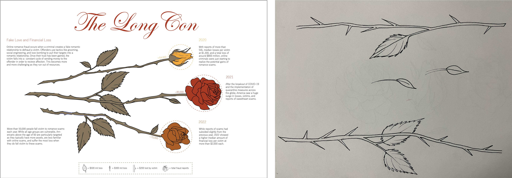
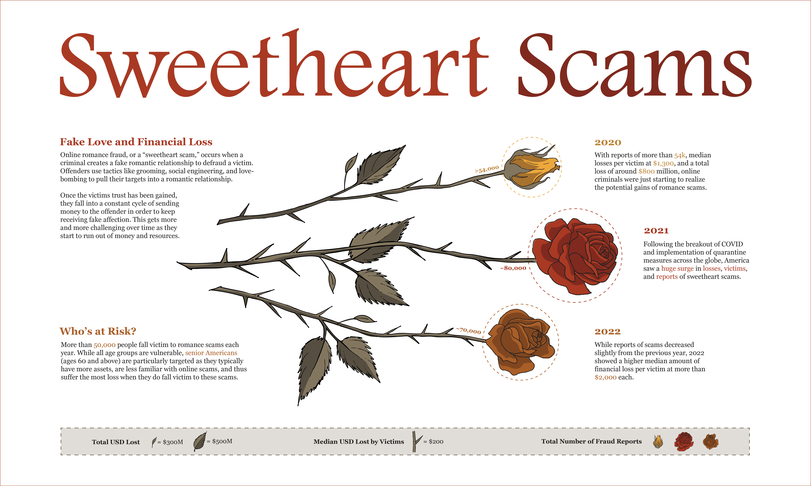
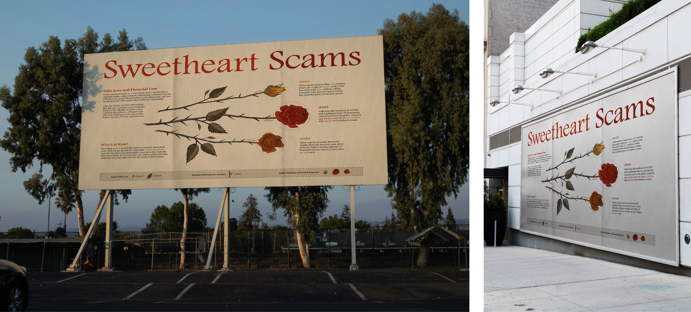
The number of people exploiting others and those vulnerable to being exploited is only getting larger over time. Usage of the internet by societies most vulnerable groups has unpredictable consequences, especially with the rise of AI and the transformation of tactics used to gain trust from victims. These informative posters are just the first step in preventing these outcomes. The rest is up to you, me, and all our loved ones. Beyond being educated about the risks, it's on us to look out for each other and take care of our children and our elders.